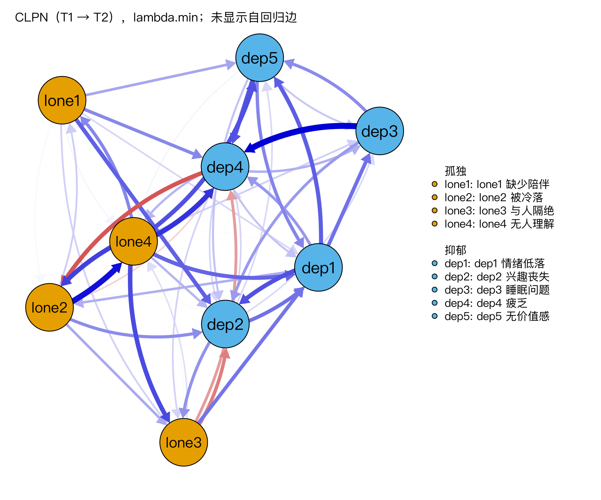

期末考试
学完 10.3 后做，约 90 分钟。A 部分 25 道自动判分题，B 部分 4 道解读题（自己先写，再对照参考答案和评分要点逐条打分，可以修改后重做），C 部分 5 道需要在 R 里算的题。
考前须知
- A、C 部分以“一次答对”计分：每道题第一次的回答算数。页面顶部的“其中一次答对 y 题”就是你的成绩，A 部分每题 2 分（共 50 分），C 部分每题 2 分（共 10 分）。
- B 部分每题 10 分，按“结论 4 · 数字与区间 3 · 方向 2 · 不过度解读 1”四个维度评分。先写完再展开参考答案。
- A 部分可以闭卷做；B 部分可以打开课程里的图表；C 部分需要 RStudio 和课程数据
data/clpn_sim_wide.csv。 - A 部分有 8 道题和前测考同样的知识点（换了数字和情境）。做完以后，对照前测记在学习日志里的成绩，看看自己进步了多少。
A 部分：自动判分题（25 题）
覆盖 M1–M9。标 [平行] 的 8 道题与前测考同样的知识点。
[平行] 某家庭暴力求助热线一周接到 50 个电话，其中 18 个来自老年人。来自老年人的电话占百分之几？（只填数字）
[平行] 一个社区 7 户家庭的月收入里，有一户是收入极高的企业主。想描述“这个社区一般家庭的收入”，用哪个数更合适？
- 平均数会被那一户极端值拉高。
- 对。
- 最大值只代表那一户。
- 方差描述离散程度，不描述“一般水平”。
[平行] 如果真的调查了全省每一位社工，算出平均工作年限是 6.2 年。这个 6.2 在统计上叫什么？
- 对。
- 统计量是从样本算出来的；这里调查的是全体。
- 不是。
- 不是。
[平行] 英文论文中的 regression（例如 linear regression），中文统计术语叫什么？（填 2–4 个字）
[平行] 在 RStudio 里运行 read.csv("data/clpn_sim_wide.csv")，报错 “cannot open file … No such file or directory”。最可能的原因和最好的做法是？
- 与病毒无关。
- 对。
- 先检查路径。
- 能用，但不可复现；推荐用 Project + 相对路径。
某人在一个均值为 50、标准差为 10 的量表上得 35 分。他的 z 分数是多少？
一项研究报告孤独均值的 95% 置信区间是 [2.10, 2.30]。下面哪种解释正确？
- 置信区间描述的是均值的不确定性，不是个人分数的范围。
- 对。
- 不对。
- 样本均值就在区间中间。
一项 N = 20000 的调查发现，男女孤独均值相差 0.02 分（满分 4 分），p < .001。最恰当的结论是？
- 样本很大时，微小的差异也会显著。
- 对。
- 大样本下这很常见。
- 不对。
回归模型：抑郁 = 0.5 + 0.30 × 孤独 + 0.10 × 年龄。孤独的系数 0.30 应该怎样解释？
- 对。
- 不是因果，也不是百分比。
- 那是 R² 一类的说法。
- 偏回归系数不等于相关。
向量 x <- c(2, NA, 4)，运行 mean(x) 的结果是什么？
- 默认不会自动跳过缺失值。
- 对。要得到 3，写
mean(x, na.rm = TRUE)。 - 不对。
- 不会报错，而是返回 NA。
na.rm = TRUE 见 2.2。追踪研究中，参与者是否在第 2 波流失，和他们第 2 波本来的抑郁程度有关（越抑郁越不愿意回答），即使控制了第 1 波的信息也是如此。这种缺失属于？
- 不是完全随机。
- MAR 是缺失只与已观测的变量有关。
- 对。缺失与没观测到的值本身有关，FIML 和多重插补也不能完全解决，需要做敏感性分析。
- 有缺失。
CLPN 的权重矩阵按 B[k, j] =“T1 的 k → T2 的 j”存放。B["dep4", "lone2"] 是负数，说明什么？
- 方向读反了。
- 对。负边表示反向的预测关系。
- 系数不为 0。
- 不是因果。
某研究 in-EI 的 CS 系数 = 0.36。按常用标准，应该怎样处理 in-EI 的排序？
- 最好高于 0.5。
- 对。
- 应如实报告；只是解释要谨慎。
- CS 正是描述排序稳定性的。
B 部分：解读题（4 题）
每题给出课程脚本的真实输出（数字由课程网站从 R/output/ 自动读取）。写一段话回答，再展开参考答案，按四个维度给自己打分。
题 1
B1（读边）课程数据 T1 → T2 的 CLPN（R/L7-2.R，lambda.min，共 52 条非零交叉滞后边）中，孤独 → 抑郁方向绝对值最大的边是 B["lone4", "dep4"] = 0.108（无人理解 → 疲乏），抑郁 → 孤独方向绝对值最大的边是 B["dep4", "lone2"] = −0.089（疲乏 → 被冷落）。请用 3–4 句话为论文写出这两条边的解读。


参考答案与评分标准
示例：“控制 T1 全部 9 个题目后，T1 ‘无人理解’ 得分较高的参与者，T2 ‘疲乏’ 往往也较高（B = 0.108），是孤独 → 抑郁方向最强的边。反方向上，T1 ‘疲乏’ 较高的参与者，T2 ‘被冷落’ 反而略低（B = −0.089），是一条负边。两者都是时间上的预测关系，效应较小，不能解释为因果作用，也不代表每个人内部的变化过程；其稳定性需结合 bootstrap 结果（8.2）判断。”
| 维度 | 分值 | 本题要点 |
|---|---|---|
| 结论正确 | 4 | 两条边的含义与正负号都说对 |
| 引用了正确的数字与区间 | 3 | 写出两个 B 值 |
| 方向与 B[k, j] 的读法正确 | 2 | 两条都读成 T1 的行节点 → T2 的列节点 |
| 没有因果或个体层面的过度解读 | 1 | 没有“导致”“每个人都会”之类的表述 |
题 2
B2（边的准确性）R/L8-2.R 的 1000 次 bootstrap 结果：lone4 → dep4 的估计值 0.108，bootstrap 区间 [0.011, 0.180]，在 0.018 的重抽样本中为 0；lone3 → dep1 的估计值 0.073，区间 [0.000, 0.149]，在 0.027 的重抽样本中为 0。另外，最强 10 条交叉滞后边两两比较的差异检验：全部不显著（区间都包含 0）。课程数据是模拟的，两条边的总体目标值已知：lone4 → dep4 = 0.005，lone3 → dep1 = 0.118。请写 3–5 句话：仅凭 bootstrap，能分出哪条边更可靠吗？能不能说“lone4 → dep4 比其他强边都强”？对照总体值，bootstrap 告诉了你什么、没告诉你什么？

参考答案与评分标准
示例：“两条边的重抽样稳定性相近：被压成 0 的比例分别为 0.018 和 0.027，区间下限分别为 0.011 和 0.000，都贴近 0，仅凭 bootstrap 分不出哪条更可靠。最强边之间的差异检验全部不显著（区间都包含 0），所以也不能说 lone4 → dep4 比其他强边‘更强’。对照总体值，结论反而相反：lone4 → dep4 在总体中几乎为 0（0.005），lone3 → dep1 却是真值最强的孤独 → 抑郁边（0.118）。bootstrap 只反映估计在本样本附近的抽样波动，不能说明一条边在总体中是否存在；由于 LASSO 会把估计压向 0，这些区间也不能当作严格的 95% 置信区间。”
| 维度 | 分值 | 本题要点 |
|---|---|---|
| 结论正确 | 4 | 两条边的 bootstrap 稳定性相近、分不出高下；不能说 lone4 → dep4 比其他强边更强；bootstrap 稳定不等于边在总体中存在 |
| 引用了正确的数字与区间 | 3 | 引用两条边的“为 0 的比例”或区间、差异检验结果，以及两个总体值 |
| 方向与 B[k, j] 的读法正确 | 2 | 两条边的方向写对 |
| 没有因果或个体层面的过度解读 | 1 | 不把区间当成严格置信区间，不说因果 |
题 3
B3（中心性与稳定性）R/L7-4.R：out-EI 最高的节点是 lone4（无人理解，0.61），in-EI 最高的节点是 dep4（疲乏，0.40）。R/L8-3.R 的 CS 系数：out-EI = 0.20，in-EI = 0.52。请为论文写一段中心性结果（3–5 句），包括怎样解读这两个排序。

参考答案与评分标准
示例：“‘疲乏’的 in-EI 最高（0.40），即它最容易被 T1 的其他题目预测；in-EI 的稳定性刚达到可接受水平（CS = 0.52），排序可以谨慎解释。‘无人理解’的 out-EI 最高（0.61），但 out-EI 的 CS 只有 0.20，低于 0.25，排序不稳定，本研究不解释 out-EI 的排序。中心性高只说明时间上的预测关系，不能据此认定它是‘核心症状’或最佳干预目标。”
| 维度 | 分值 | 本题要点 |
|---|---|---|
| 结论正确 | 4 | in-EI 可谨慎解释、out-EI 不解释排序 |
| 引用了正确的数字与区间 | 3 | 写出两个节点的数值和两个 CS 系数，并与 0.25 / 0.5 对照 |
| 方向与 B[k, j] 的读法正确 | 2 | out-EI = 预测别人、in-EI = 被别人预测，没有说反 |
| 没有因果或个体层面的过度解读 | 1 | 没有“核心症状”“干预它就能……”之类的说法 |
题 4
B4（敏感性分析）毕业项目示例（R/L10-2.R）主分析（lambda.min）有 52 条非零交叉滞后边。敏感性分析：改用 lambda.1se 后只剩 17 条，与主分析的边相关 r = 0.67；加入性别和年龄作为协变量后 r = 0.997；用 T2 → T3 数据重新估计，有 55 条非零边，与主分析的边相关 r = 0.64。请写一段 4–5 句的敏感性分析结果。
参考答案与评分标准
示例：“加入性别和年龄作为协变量后，网络几乎不变（与主分析的边相关 r = 0.997）。改用更保守的 lambda.1se 后，非零交叉滞后边从 52 条减少到 17 条（r = 0.67），说明许多弱边依赖于 λ 规则，只有较强的边在两种规则下都保留。用 T2 → T3 数据重新估计，边相关为 r = 0.64，整体结构有一定可重复性，但单条弱边不一定复现。因此，结果解释集中在两种规则下都保留、且 bootstrap 区间不含 0 的边；这些敏感性分析不能消除被试间 / 被试内混淆等设计上的局限。”
| 维度 | 分值 | 本题要点 |
|---|---|---|
| 结论正确 | 4 | 协变量影响很小；弱边依赖 λ 规则；结构部分复现 |
| 引用了正确的数字与区间 | 3 | 写出 3 个 r 和边数 |
| 方向与 B[k, j] 的读法正确 | 2 | 说明比较的是交叉滞后边（T1 → T2 / T2 → T3），没有把 T2 → T3 说成“另一个样本” |
| 没有因果或个体层面的过度解读 | 1 | 不把复现当成因果证据 |
C 部分：R 小任务（5 题）
在 RStudio 里打开 clpn-course.Rproj，先运行下面两行，再完成每道题。答案保留 3 位小数（或填整数），容差 ±0.01。
source("R/_setup.R")
dat <- read_course_data()C2：T1 的 lone3_t1（与人隔绝）和 T2 的 dep1_t2（情绪低落）的皮尔逊相关是多少？（3 位小数）
cor(dat$lone3_t1, dat$dep1_t2)C3：数据中女性（gender == 1）有多少人？
sum(dat$gender == 1) 或 table(dat$gender)C5：用课程函数估计 T1 → T2 的 CLPN，λ 用 EBIC 规则（不做交叉验证，结果固定）：B <- clpn_estimate(dat[, vars_t(1)], dat[, vars_t(2)], rule = "ebic")。去掉自回归边以后，有多少条交叉滞后边不为 0？
sum(cl_only(B) != 0)：cl_only() 把对角线设为 0。R/assess_answers.R 计算。逐节点估计与权重矩阵见 7.2；EBIC 规则比 lambda.min 稀疏。做完以后
一次答对 70% 及以上就进入下一个模块；不到 70% 的，按错题解释里的链接回去复习，过几天再做一次。把一次答对的题数记进学习日志。计分方式和评分标准见测评总页。
CLPN 从零开始 · 返回大纲